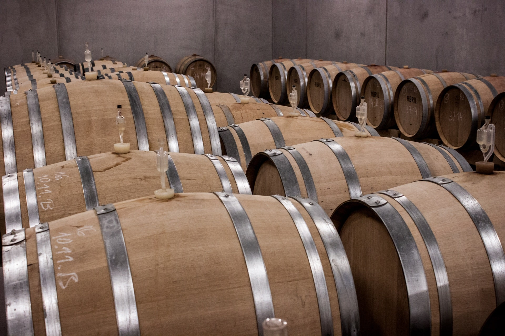
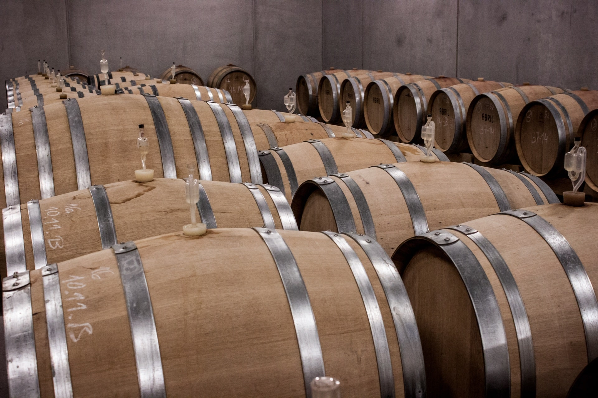

Wines
The winery has a collection of wines of different varietals. Among which we can find: Cabernet Sauvignon, Merlot, Malbec, Syrah, Viognier and Chardonnay. All of these are viarietals typical of the Mendoza region, recognized for its arid and dry climate. The wines are aged in French oak barrels between 8 and 18 months until they reach equilibrium.
 
